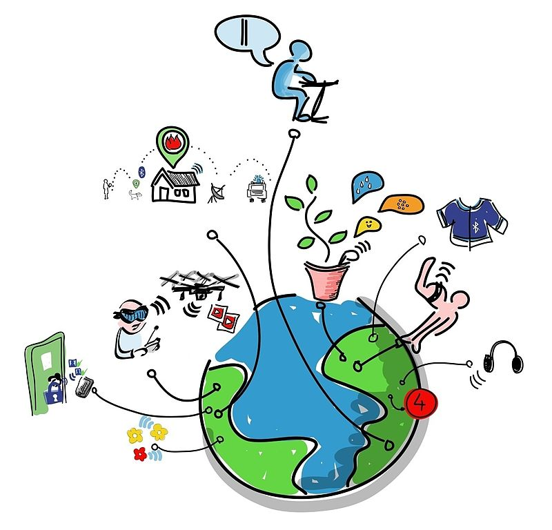

THE INTERNET
- It is a network of networks that consists of millions of private, public, academic, business, and government networks, of local to global scope,that are linked by a broad array of electronic, wireless and optical networking technologies.
- A global system of interconnected computer networks that use the standard Internet Protocol Suite (TCP/IP) to serve billions of users worldwide
- A means of connecting a computer to any other computer anywhere in the world via dedicated routers and servers. When two computers are connected over the Internet, they can send and receive all kinds of information such as text, graphics, voice, video, and computer programs. Read more: http://www.businessdictionary.com/definition/internet.html
- A global information medium which users can read and write via computers connected to the Internet. The term is often mistakenly used as a synonym for the Internet itself, but the Web is a service that operates over the Internet, as e-mail does.
- In September 1994, Berners-Lee founded the World Wide Web Consortium (W3C) at the Massachusetts Institute of Technology with support from the Defense Advanced Research Projects Agency(DARPA) and the European Commission. It comprised various companies that were willing to create standards and recommendations to improve the quality of the Web.
Tim Berners-Lee is credited as the inventor of the World Wide Web. A physicist, Berners-Lee and his team built the world's very first web browser, WorldWideWeb, the first web server and the HyperText-based markup language HTML. Berners-Lee founded and is the current director of the World Wide Web Consortium (W3C), a standards body that oversees the development of the web as a whole. While the Internet itself dates back 1969, it was Berners-Lee who was able to bring together the concept of the Internet and hypertext, which set the foundation for the Internet as we know it today.
Internet vs. The World Wide WebThe Internet is not synonymous with World Wide Web. The Internet is a massive network of networks, a networking infrastructure. It connects millions of computers together globally, forming a network in which any computer can communicate with any other computer as long as they are both connected to the Internet. The World Wide Web, or simply Web, is a way of accessing information over the medium of the Internet. It is an information-sharing model that is built on top of the Internet.
IoT (Internet of Things)The Internet of things (IoT) is the inter-networking of physical devices, vehicles (also referred to as "connected devices" and "smart devices"), buildings, and other items—embedded with electronics, software, sensors, actuators, and network connectivity that enable these objects to collect and exchange data. In 2013 the Global Standards Initiative on Internet of Things (IoT-GSI) defined the IoT as "the infrastructure of the information society." The IoT allows objects to be sensed or controlled remotely across existing network infrastructure,[4] creating opportunities for more direct integration of the physical world into computer-based systems, and resulting in improved efficiency, accuracy and economic benefit in addition to reduced human intervention.When IoT is augmented with sensors and actuators, the technology becomes an instance of the more general class of cyber-physical systems, which also encompasses technologies such as smart grids, smart homes, intelligent transportation and smart cities. Each thing is uniquely identifiable through its embedded computing system but is able to interoperate within the existing Internet infrastructure. Experts estimate that the IoT will consist of almost 50 billion objects by 2020.
Photo by wikipidia.org